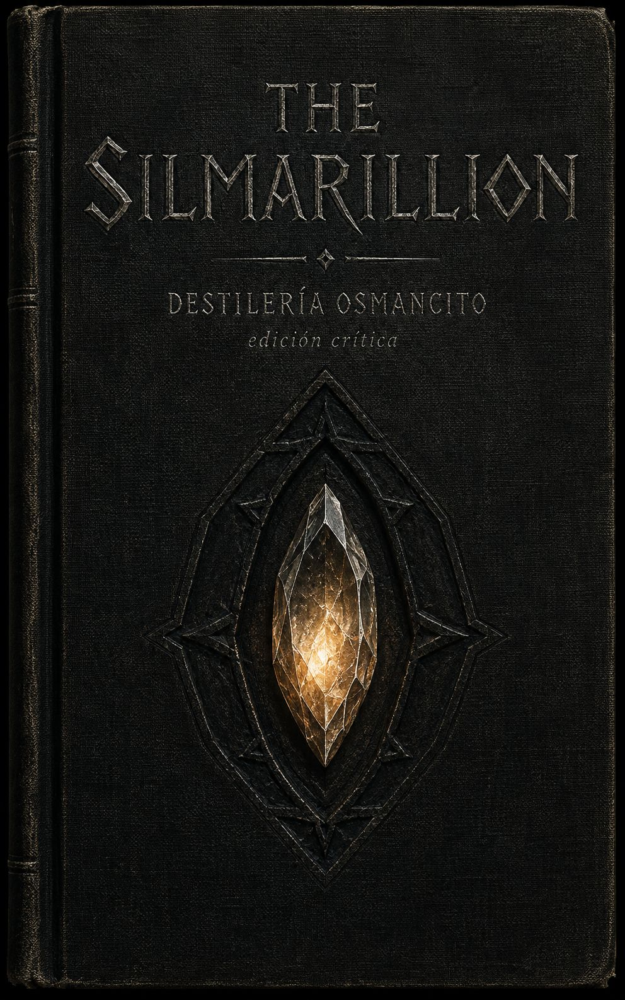
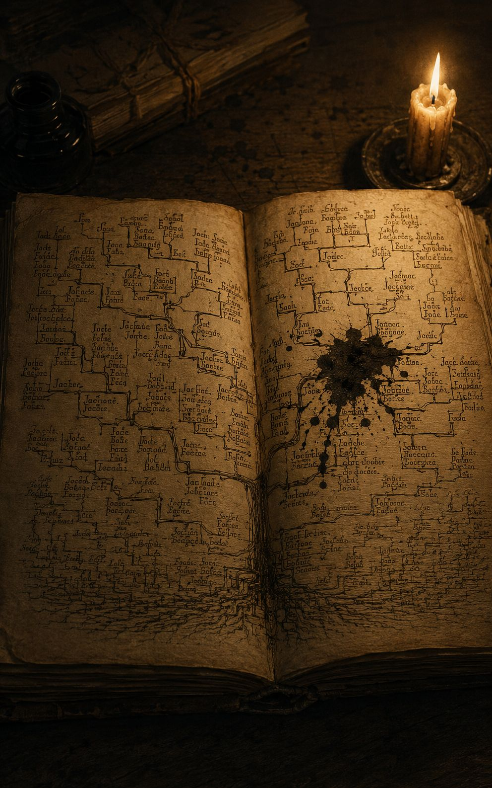
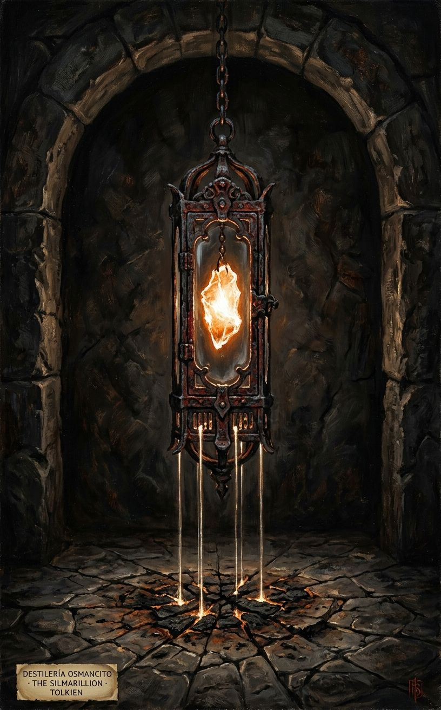
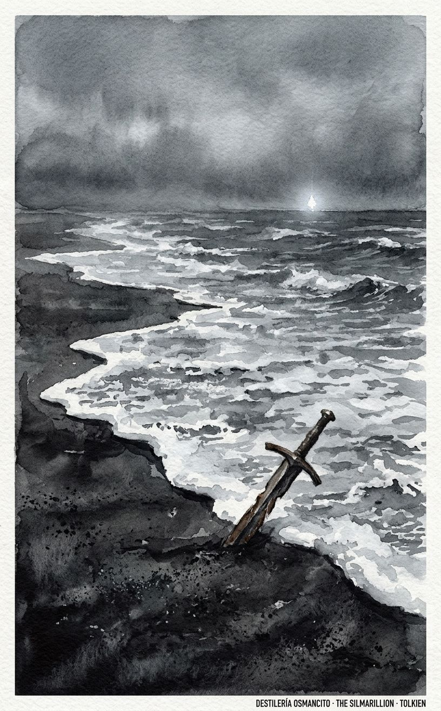
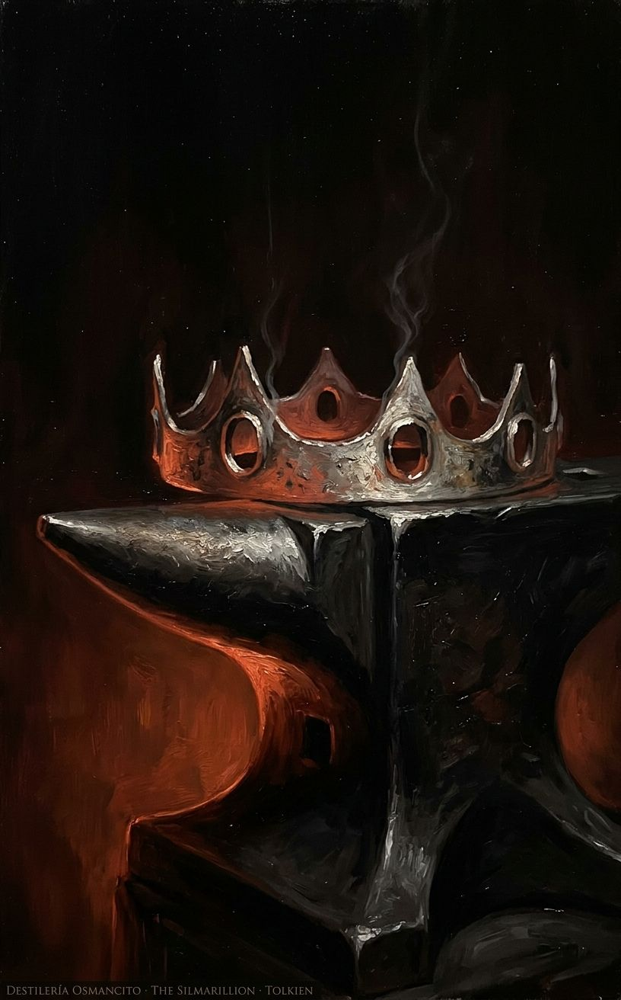
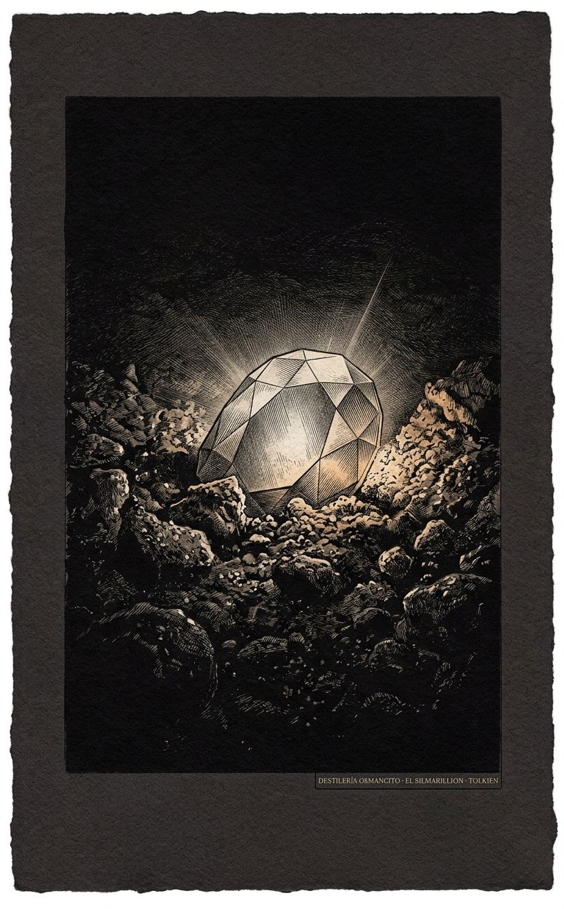
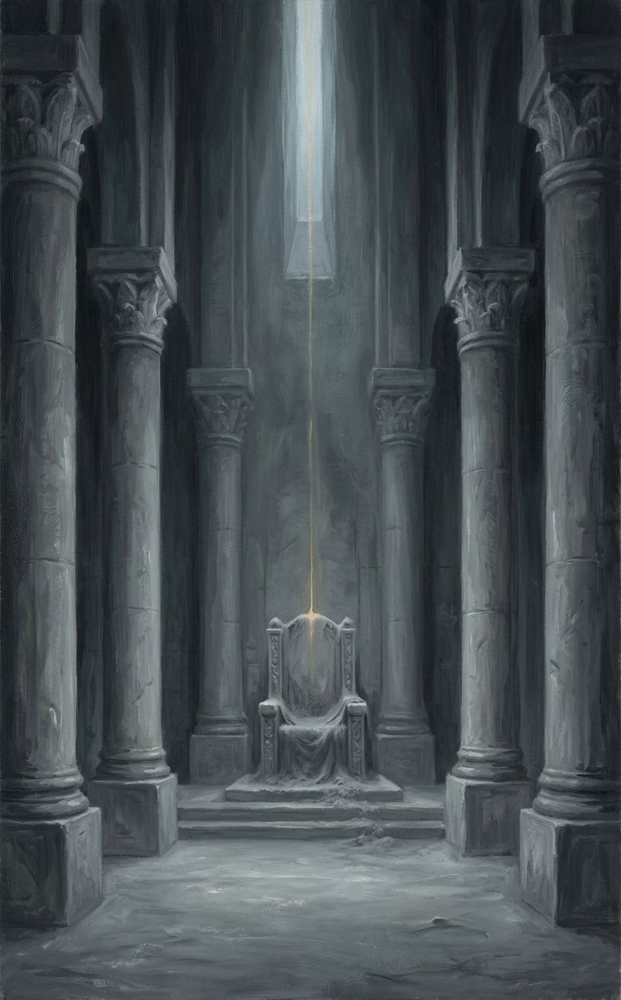
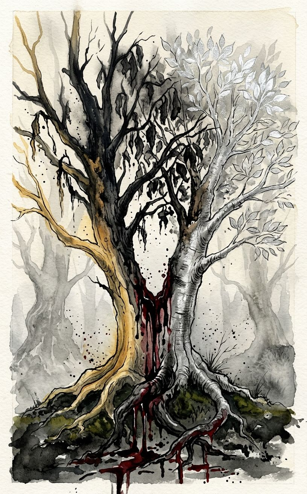

Esto no es una historia sobre el bien y el mal: es una historia sobre lo que un artista está dispuesto a hacer para no soltar lo que hizo. Tres piedras que atrapan la única luz pura que existió, y un padre que las ama tanto que condena a su pueblo entero para recuperarlas. Aquí gana casi siempre la pérdida, no la victoria, y sin embargo el libro no se lee como tragedia sino como genealogía de un dolor que se hereda de generación en generación hasta gastarse. Si el lector recuerda una sola cosa, que sea esta: la belleza absoluta, aquí, es lo primero que hay que perder.
Pesa como una piedra tallada por manos que ya no existen, fría al tacto, y antes de abrirse promete que nada de lo que contiene se va a resolver del todo.
No es una novela ni exactamente un mito: es el registro de una pérdida contada desde tres distancias distintas —la del cosmos que se abre, la del pueblo que se exilia, la del reino que se hunde— sin que ninguna termine de cerrar la anterior. Nombrar lo que es este corpus obliga a decir que es una escritura ritual antes que narrativa: repite, invoca, genealogiza. Resumir lo que dice sería traicionar la forma en la que insiste en decirlo.
Título — El Silmarillion Autor — J.R.R. Tolkien (editado póstumamente por Christopher Tolkien) Año — 1977 Género — Mitología / cosmogonía legendaria Extensión estimada — 137.016 palabras, aproximadamente 548 páginas (250 palabras/página), 24 secciones mayores (Ainulindalë, Valaquenta, 24 capítulos del Quenta Silmarillion agrupados en dos partes, Akallabêth, Of the Rings of Power and the Third Age) Idioma original — Inglés Palabra más frecuente con contenido — Morgoth. El corpus se declara historia de la creación y de los Elfos, pero su palabra más repetida es el nombre del enemigo: confirma lo que el propio título calla —esto es, antes que nada, la historia de una caída y de quien la causa.
Ilúvatar crea a los Ainur y, a través de su música, el mundo; uno de ellos, Melkor, introduce la discordia que se filtrará en toda la creación. Los Elfos despiertan, algunos viajan al Reino Bendecido, y allí Fëanor forja los Silmarils, tres joyas que capturan la luz de los Dos Árboles. Melkor —ya llamado Morgoth— destruye los Árboles, roba las joyas y huye a la Tierra Media; Fëanor jura recuperarlas a cualquier costo y arrastra a su pueblo, los Noldor, a un exilio marcado por una maldición autoinfligida. Siguen guerras, alianzas, amores imposibles y ruinas sucesivas de los reinos élficos, hasta que la intervención final de los Valar derrota a Morgoth. El libro cierra con la caída de Númenor y un resumen de la Tercera Edad que conecta esta historia con El Señor de los Anillos.
Ilúvatar — el Único, creador de los Ainur y origen de toda la música que se vuelve mundo. Melkor / Morgoth — el Ainur más poderoso, cuya discordia y posterior robo de los Silmarils mueve casi toda la trama. Fëanor — el más grande de los Noldor, forjador de los Silmarils, cuyo juramento condena a su linaje. Fingolfin — hermanastro de Fëanor, rey de los Noldor exiliados, muere en duelo singular contra Morgoth. Beren y Lúthien — un hombre mortal y una elfa inmortal cuyo amor logra arrancar un Silmaril de la corona de Morgoth. Túrin Turambar — héroe humano perseguido por la maldición de Morgoth sobre su linaje. Eärendil — navegante que lleva un Silmaril a los Valar y obtiene su intervención final. Sauron — lugarteniente de Morgoth, sobrevive a su caída y prepara la trama de las Edades siguientes.
La música de los Ainur ante Ilúvatar contiene, ya en su origen, la discordia de Melkor: el mundo nace con una grieta incorporada, no como accidente posterior. Los Valar descienden a Arda para darle forma; Melkor disputa ese trabajo desde el principio, destruye lámparas, corrompe lo que puede. Los Elfos despiertan junto al lago Cuiviénen; algunos —los Eldar— son invitados a Valinor, donde crecen los Dos Árboles que dan toda la luz del Reino Bendecido. Fëanor, el más dotado de los Noldor, forja los Silmarils para capturar esa luz. Melkor, liberado tras un largo cautiverio y fingiendo arrepentimiento, envenena la confianza de los Noldor, mata a los Árboles con ayuda de la araña Ungoliant, y roba los Silmarils antes de huir a la Tierra Media, donde reconstruye su fortaleza y se corona Morgoth, el Enemigo Oscuro.
Fëanor jura, junto a sus siete hijos, perseguir hasta la muerte a quien retenga un Silmaril sin su consentimiento —juramento que se convertirá en la maldición estructural del libro. Para partir hacia la Tierra Media los Noldor cometen el primer Kinslaying, la matanza de otros Elfos por sus naves; Fëanor muere poco después de desembarcar. Su hijo Maedhros y el resto del pueblo quedan exiliados bajo una maldición declarada por los Valar. En la Tierra Media se establecen reinos élficos —Nargothrond, Doriath bajo el rey Thingol y la reina Melian, Gondolin oculta por Turgon— que sostienen una larga resistencia contra Morgoth a través de sucesivas batallas, la mayor de las cuales, la Nirnaeth Arnoediad, termina en derrota catastrófica.
En medio de la guerra, Beren, un hombre mortal, y Lúthien, hija de Thingol y Melian, se aman contra la prohibición de su padre; juntos logran lo que ningún ejército pudo: entrar en la fortaleza de Morgoth y arrancar un Silmaril de su corona. Ese Silmaril pasa, por herencia y disputa, a manos de Thingol, y su posesión desata la ruina de Doriath por los propios hijos de Fëanor, fieles a su juramento incluso contra otros Elfos. Paralelamente, Túrin Turambar, hijo de Húrin, vive una vida entera perseguida por la maldición que Morgoth pronunció sobre su padre tras capturarlo: exilios, muertes involuntarias, un incesto no reconocido y un suicidio final que cierra su historia como la más sombría del libro. Gondolin, la última gran ciudad élfica oculta, cae finalmente por traición.
Solo queda un camino: Eärendil, hijo del linaje mestizo de Hombres y Elfos, navega hasta Valinor —algo prohibido a los mortales— llevando consigo el Silmaril rescatado por Beren y Lúthien, y suplica ayuda ante los Valar. Estos responden con la Guerra de la Ira, que destruye a Morgoth y buena parte de la Tierra Media en el proceso; Morgoth es expulsado al Vacío. Los dos Silmarils restantes se pierden —uno al mar, otro bajo tierra— en manos de los últimos hijos de Fëanor, que mueren cumpliendo su juramento hasta el final sin haber conseguido nada. El libro cierra con la Akallabêth, la caída de Númenor —la isla otorgada a los Hombres fieles, destruida cuando su rey, seducido por Sauron, desafía a los Valar— y con un resumen final, Of the Rings of Power and the Third Age, que narra la forja de los Anillos, la traición de Sauron y su primera derrota, tendiendo el puente hacia El Señor de los Anillos.
Primer contacto. El corpus no se siente como una novela que avanza sino como una piedra con muchas caras que se giran una tras otra bajo la misma luz fría: cada capítulo repite, con nombres distintos, la misma estructura de esplendor-orgullo-pérdida, y esa repetición no cansa por defecto de invención sino porque parece ser exactamente el punto. Hay una solemnidad litúrgica sostenida de principio a fin —nadie ríe, casi nadie duda en voz baja— que al principio distancia y después, acumulada, empieza a doler de un modo que ninguna escena aislada explicaría por sí sola.
¿Puede un acto de creación absoluta —una luz, una música, una gema— existir sin que alguien, tarde o temprano, la convierta en posesión?
El juramento de Fëanor actúa como maldición autocumplida: ¿el mal en este mundo es una fuerza externa (Morgoth) o el precio que cobra la fidelidad llevada hasta el fin?
La caída se repite en cada escala —cósmica, de pueblo, de familia, de individuo— sin que ninguna intervención divina llegue a tiempo: ¿qué tipo de providencia es esta, que solo actúa después de que todo lo importante ya se perdió?
Antes de que hubiera Sol o Luna, Ilúvatar propuso a los Ainur un tema de música, y ellos cantaron ante él, y su música tomó forma y se hizo mundo. Pero Melkor tejió en la armonía pensamientos propios que no venían de Ilúvatar, buscando acrecentar el poder y el esplendor de su parte; y de la discordia entre su música y la de los demás nació, ya en el origen de todo, la sombra que recorrería cada edad siguiente. Ilúvatar no calló la discordia ni la borró: la incorporó al tema, de modo que hasta la rebeldía de Melkor terminara sirviendo, sin saberlo, a una gloria mayor que la suya. El mundo, desde antes de existir, ya contenía su propia grieta.
Los Dos Árboles de Valinor, Telperion el de plata y Laurelin la de oro, daban toda la luz del Reino Bendecido, floreciendo por turnos, hora tras hora, de modo que Valinor nunca estuvo sin luz ni completamente a oscuras. Fëanor, el más hábil de los Noldor, encerró esa luz mezclada de ambos árboles en tres joyas, los Silmarils, y ni él mismo supo después repetir el arte con que las hizo. Amó lo que había hecho con un amor que se parecía más a la posesión que a la creación, y cuando Melkor y la araña Ungoliant envenenaron las raíces de los Árboles hasta secarlos, los Silmarils quedaron como el último resto de una luz que ya no volvería a existir en el mundo. Fëanor, llamado entonces a entregarlas para que los Valar intentaran sanar los Árboles con ellas, se negó. Poco después Melkor mató a su padre y robó las joyas de todos modos: Fëanor perdió a su padre y su obra en la misma noche, sin haber cedido nada.
Fue entonces cuando Fëanor, ardiendo de dolor y de una furia que ya no distinguía la venganza de la justicia, reunió a su pueblo en Tirion y pronunció ante ellos un juramento terrible, y con él sus siete hijos: perseguir con odio hasta el fin del mundo a cualquiera, Vala, Elfo o Mortal, que retuviera un Silmaril sin su consentimiento. Ese juramento no se cumpliría una sola vez: se repetiría como una maldición hereditaria cada vez que un Silmaril cambiara de manos, arrastrando a los propios hermanos a matar a otros Elfos, a traicionar alianzas, a destruir los mismos reinos que juraron defender. Los Valar no maldijeron a Fëanor: él se maldijo a sí mismo, y su pueblo entero pagó por la palabra que pronunció en un solo instante de dolor.
Entre las guerras que siguieron hay una historia que los propios Elfos consideraron la más hermosa de cuantas se contaron: la de Beren, un hombre mortal que había perdido a su padre y a sus compañeros a manos de Morgoth, y Lúthien, hija del rey Thingol y de la Maia Melian, la más bella de todos los Hijos de Ilúvatar. Beren la vio bailar al anochecer en un claro del bosque y quedó mudo, hechizado, y durante mucho tiempo no supo llamarla de otro modo que Tinúviel, Ruiseñor. Cuando por fin logró que ella lo escuchara y el amor entre ambos fue innegable, Thingol —que jamás habría entregado a su hija a un mortal— le impuso una condición pensada para matarlo sin romper su propio juramento: que le trajera un Silmaril arrancado de la corona de Morgoth. Fue una sentencia de muerte disfrazada de dote, y todos los que la oyeron lo supieron, menos quizás el propio Thingol, que no midió cuánto pesaría esa palabra sobre su propio reino.
Beren cumplió lo imposible. Con la ayuda de Lúthien —que escapó de la prisión que su padre le construyó en lo alto de un árbol tejiendo un manto de sueño con su propio cabello—, del gran perro Huan, que solo podía hablar tres veces en su vida y gastó una de ellas para aconsejarlos, y de un valor que no distinguía ya la esperanza de la desesperación, los dos entraron disfrazados en la fortaleza de Angband. Lúthien cantó ante el propio Morgoth un canto de tal belleza que lo hundió en un sueño del que ni su voluntad pudo salvarlo, y Beren, arrastrándose bajo el trono, cortó de la corona un Silmaril con el cuchillo Angrist. Quiso llevarse los tres; el cuchillo se quebró en el intento y una esquirla hirió la mejilla de Morgoth, que despertó a medias. Huyeron con uno solo, y en la puerta misma de Angband el lobo Carcharoth le arrancó la mano que sostenía la joya de un mordisco, tragándose Silmaril y mano juntos —de modo que la luz sagrada, que ningún mal podía tocar sin quemarse, ardió para siempre dentro de las entrañas de la bestia y la volvió loca de un dolor que no tenía cura. Beren regresó ante Thingol con la mano derecha vacía y la izquierda cercenada, y cuando el rey le pidió mostrar la joya, respondió: “Incluso ahora hay un Silmaril en mi mano” —y alzó el muñón. Desde entonces se llamó a sí mismo Camlost, el Manco.
La joya volvió a ellos solo cuando cazaron y mataron a Carcharoth y le abrieron el vientre; el Silmaril seguía intacto entre sus entrañas consumidas, como si el fuego sagrado no pudiera tocarlo a él tampoco, aunque lo llevara dentro. Pero Beren murió poco después de heridas de esa cacería, y Lúthien, inmortal, eligió no aceptar el destino de los Elfos: fue ante Mandos, señor de los muertos, y cantó ante él la canción más triste que el mundo haya oído —la única vez que se dice que Mandos sintió piedad. A cambio de esa piedad se le ofreció una elección: vivir para siempre en Valinor sin Beren, olvidando toda su pena, o renunciar a su inmortalidad y compartir con él el destino mortal de los Hombres, con una muerte verdadera al final. Eligió lo segundo. De todos los Elfos que existieron, ella es la única que murió de verdad y no ha vuelto —el único puente real, no metafórico, entre las dos razas que Ilúvatar hizo distintas a propósito.
No todas las historias del libro tienen ese consuelo. Húrin, capturado por Morgoth tras una batalla perdida y encadenado en un asiento de piedra desde el cual el Enemigo lo obligaba a ver, pronunció una maldición sobre todo su linaje que se cumplió con una precisión casi administrativa: su hijo Túrin, criado lejos de casa, mató sin saberlo a su mejor amigo, causó la caída de un reino que lo había acogido, y —sin que ninguno de los dos lo supiera— se casó con su propia hermana Nienor, a quien un dragón le había robado la memoria. Cuando el dragón moribundo, con su último aliento, le reveló a Nienor quién era en realidad su marido, ella se arrojó a un precipicio; y cuando Túrin lo supo, se atravesó con su propia espada, la misma que había hablado antes con voz humana para aceptar darle muerte. No hay redención en este tramo del libro, ni consuelo de canción ante Mandos: solo la maldición cumplida hasta el final, como una fórmula que no admite excepción.
Al final, cuando ya no quedaba ejército élfico capaz de enfrentar a Morgoth y Beleriand entera se hundía bajo su poder, Eärendil —hijo de un hombre y una elfa, nieto en cierto modo de Beren y Lúthien por la sangre que se mezcló en su linaje— navegó hacia el Oeste llevando consigo el Silmaril rescatado, algo prohibido a los mortales bajo pena de muerte. Se presentó ante los Valar no como conquistador sino como suplicante, hablando en nombre de dos pueblos, Elfos y Hombres, que ya no tenían nada más que ofrecer salvo la súplica misma. Los Valar respondieron con una guerra que quebró el mundo antiguo para rehacerlo: Morgoth fue derrocado, encadenado y arrojado al Vacío, más allá de los límites de toda historia posible. Pero incluso esa victoria llegó demasiado tarde para casi todos los que habían luchado, y los dos Silmarils que quedaban se perdieron igual —uno tragado por el mar, otro hundido en una grieta de fuego bajo la tierra por el propio hijo de Fëanor que lo llevaba, incapaz ya de soportar el peso de un juramento que nunca debió pronunciar. Solo el tercero, el que Eärendil llevaba, quedó fijo en el cielo como una estrella: la única luz de los Árboles que el mundo conservó, y la única que dejó de pertenecerle a nadie.
Ainulindalë y el origen del mundo. Ilúvatar propone a los Ainur un tema musical; ellos cantan, y de su canto nace la visión del Mundo. Melkor, el más dotado de los Ainur, teje en la música pensamientos propios que no vienen de Ilúvatar, buscando magnificar su propia parte; tres veces la discordia rompe la armonía, y tres veces Ilúvatar la incorpora a un tema nuevo, mayor, de modo que incluso la rebeldía termina sirviendo a un diseño que Melkor no alcanza a ver completo. Ilúvatar muestra a los Ainur una Visión del Mundo que resultaría de esa música, y luego les da el Ser: “Eä, que sea”. Muchos Ainur descienden a habitarlo —los Valar— y entre ellos Melkor, que desde el principio disputa la forma del mundo a los demás, deshaciendo lo que Manwë, Ulmo, Aulë y los otros construyen.
Del principio de los días. Tulkas llega para ayudar a los Valar en la Primera Guerra y ahuyenta a Melkor, que se retira por un tiempo. Los Valar dan forma a Arda; Aulë construye dos grandes lámparas, Illuin y Ormal, que iluminan la tierra por igual. Bajo esa luz crecen las primeras plantas y bestias. En un festín de descanso, Melkor regresa en secreto, construye la fortaleza de Utumno, y desde allí corrompe la tierra antes de que los Valar lo noten; luego destruye las dos lámparas, quebrando la simetría original del mundo. Los Valar, sin poder desalojarlo aún, se retiran a Aman y levantan las Pelóri, las montañas que protegen Valinor. Allí Yavanna canta ante el montículo de Ezellohar y hace nacer los Dos Árboles, Telperion y Laurelin, que dan toda la luz de Valinor en turnos de siete horas. Se establece el linaje de los Elfos y los Hombres: a los primeros, la inmortalidad ligada al mundo; a los segundos, la muerte como don incomprendido.
De Aulë y Yavanna. Impaciente por tener alumnos antes de que lleguen los Hijos de Ilúvatar, Aulë crea en secreto a los Siete Padres de los Enanos. Ilúvatar lo confronta; Aulë, humillado, ofrece destruir su obra con un martillo, y los Enanos se encogen de miedo ante el golpe —prueba de que ya tienen vida propia. Ilúvatar perdona a Aulë pero ordena que los Enanos duerman bajo la piedra hasta que despierten los Elfos, los Primogénitos verdaderos. Yavanna, dolida porque los Enanos no amarán las cosas que crecen, obtiene de Manwë la promesa de que existirán los Pastores de los Árboles —los futuros Ents— para proteger los bosques de la industria de sus hijos y los de los Hombres.
De la venida de los Elfos y el cautiverio de Melkor. Melkor construye Angband, comandada por su lugarteniente Sauron. Los Valar, alertados por Yavanna y Oromë, deciden actuar antes de que despierten los Elfos; Varda crea nuevas estrellas, entre ellas la Hoz de Valar como desafío a Melkor. Junto al lago Cuiviénen despiertan los Quendi, los Elfos, que se nombran a sí mismos “los que hablan con voces”. Oromë los encuentra por azar durante una cacería; muchos huyen de él por miedo, sembrado por espías de Melkor que ya habían estado secuestrando y corrompiendo Elfos extraviados para criar de ellos, en las mazmorras de Utumno, la primera raza de Orcos. Los Valar declaran la guerra a Melkor; tras un largo asedio, Tulkas lo derrota en combate y lo encadena con la cadena Angainor; es llevado a juicio y condenado a tres edades de prisión en las Mansiones de Mandos. Los Valar convocan a los Elfos a Valinor; tres embajadores —Ingwë, Finwë, Elwë— aceptan y persuaden a la mayoría. Comienza la Gran Marcha hacia el oeste, dividida en tres pueblos: Vanyar, Noldor y Teleri. No todos llegan: los Avari se quedan atrás por elección, los Nandor se desvían siguiendo a Lenwë hacia el sur, y el pueblo de Elwë se demora en el camino.
De Thingol y Melian. Elwë, explorando el bosque de Nan Elmoth, oye el canto de la Maia Melian y queda hechizado; permanecen juntos, inmóviles, durante años que ni notan pasar. Al despertar, Elwë es ya Thingol, Rey Elu, señor de los Sindar de Beleriand, y Melian su reina; de su unión nacerá Lúthien, la más bella de todos los Hijos de Ilúvatar.
De Eldamar y los príncipes de los Eldalië. Ulmo transporta a los Vanyar y Noldor a Valinor sobre una isla arrancada del fondo del mar; los Teleri, rezagados buscando a su rey perdido, quedan varados en la misma isla —Tol Eressëa, la Isla Solitaria— cuando Ossë, que ama su compañía, la ancla al fondo del mar contra el deseo de los Valar. Se funda la ciudad de Tirion sobre la colina de Túna. Se establece el linaje de la casa de Finwë: sus hijos Fëanor (de su primera esposa Míriel), Fingolfin y Finarfin (de su segunda esposa Indis) — y los hijos de estos: los siete hijos de Fëanor (Maedhros, Maglor, Celegorm, Caranthir, Curufin, y los gemelos Amrod y Amras); Fingon y Turgon, hijos de Fingolfin, y su hermana Aredhel; Finrod Felagund, Orodreth, Angrod y Aegnor, hijos de Finarfin, y su hermana Galadriel. Finalmente, tras muchos años, los Teleri también llegan a Aman arrastrados por cisnes, y fundan Alqualondë, el Puerto de los Cisnes.
De Fëanor y el desencadenamiento de Melkor. Nace Fëanor, hijo primogénito de Finwë; su madre Míriel muere de agotamiento espiritual tras darlo a luz, dejando una herida abierta en la casa de Finwë que nunca cicatriza del todo. Fëanor crece como el más hábil de los Noldor: inventa un alfabeto, perfecciona el arte de las gemas. Cumplido su cautiverio, Melkor pide perdón y es liberado bajo vigilancia; finge amistad con los Noldor mientras siembra mentiras que enfrentan a Fëanor con Fingolfin, insinuando usurpación y traición mutuas. Fëanor, armado, amenaza a Fingolfin con la espada ante su padre; los Valar lo desterraran de Tirion por doce años. Se retira a Formenos con sus siete hijos y su padre Finwë, llevándose los Silmarils.
De los Silmarils y el desasosiego de los Noldor. Fëanor forja los Silmarils, encerrando en ellos la luz mezclada de los Dos Árboles —un logro que ni él mismo podrá repetir. Varda los santifica: ninguna mano impura puede tocarlos sin quemarse. Melkor los codicia desde entonces. Visita a Fëanor en Formenos fingiendo alianza, pero se traiciona al mencionar los Silmarils con codicia evidente; Fëanor, furioso, lo expulsa. Melkor huye hacia el sur, se alía con la araña gigante Ungoliant en las tierras de Avathar.
Del oscurecimiento de Valinor. Durante una gran fiesta pensada por Manwë para reconciliar a los Noldor, Melkor y Ungoliant atacan los Dos Árboles: él los hiere con su lanza, ella sorbe su savia hasta secarlos y devora las reservas de luz de los pozos de Varda, hinchándose monstruosamente. La luz de Valinor se apaga. En la misma hora, Melkor asalta Formenos, mata a Finwë —la primera sangre derramada en el Reino Bendecido— y roba los Silmarils. Fëanor, enloquecido de dolor, maldice a Melkor llamándolo por primera vez Morgoth, “el Enemigo Oscuro”. Cuando Yavanna pide los Silmarils para intentar revivir los Árboles con su luz, Fëanor se niega: antes de que pueda decidir, llegan las noticias de Formenos, y la pregunta queda sin sentido —las joyas ya no están.
De la huida de los Noldor. Fëanor pronuncia en Tirion un discurso incendiario acusando a los Valar de retener a los Elfos por celos, y jura junto a sus siete hijos perseguir hasta el fin del mundo a quien retenga un Silmaril sin su consentimiento. La mayoría de los Noldor, arrastrados por su elocuencia, deciden partir de Valinor; se dividen en dos huestes, la de Fëanor y la, más numerosa y reticente, de Fingolfin. En Alqualondë, cuando los Teleri se niegan a prestar sus naves, Fëanor intenta tomarlas por la fuerza: ocurre el primer Kinslaying, la matanza de Elfos por Elfos. Mandos pronuncia la Profecía del Norte, condenando a los Noldor exiliados a lágrimas sin cuenta y a la traición perpetua del juramento de Fëanor. Finarfin se arrepiente y regresa a Valinor con parte de su pueblo; el resto continúa. Al llegar al Helcaraxë, el estrecho de hielo, Fëanor roba las naves y cruza sin esperar a Fingolfin, luego las quema en Losgar por despecho, condenando a la hueste de Fingolfin a cruzar el hielo a pie —con la muerte de Elenwë, esposa de Turgon, entre sus pérdidas.
Del Sol y la Luna y el ocultamiento de Valinor. Los Valar rescatan una última flor de Telperion y un último fruto de Laurelin antes de que los Árboles mueran del todo, y con ellos crean la Luna y el Sol, guiados por la Maia Arien y el Maia Tilion. Comienza la Cuenta de los Años del Sol. Los Valar, temiendo un ataque similar al que destruyó Almaren, fortifican Valinor con montañas infranqueables y ocultan las rutas marítimas con islas encantadas —el Ocultamiento de Valinor— de modo que ningún mensajero volverá a llegar allí, salvo uno.
De los Hombres. Con el primer amanecer del Sol despiertan los Hombres en Hildórien, al este de la Tierra Media. A diferencia de los Elfos, mueren y su destino después de la muerte es desconocido incluso para los Valar —el don de Ilúvatar que ni el tiempo hará envidiar menos a los Poderes. Elfos y Hombres se encuentran pronto y se hacen aliados; de esa mezcla nacerán, generaciones después, Eärendil, Elwing y su hijo Elrond.
Del regreso de los Noldor. Fëanor desembarca primero en la Tierra Media, y su grito de guerra al quemar las naves en Losgar resuena por toda la costa —los Orcos y el propio Morgoth lo escuchan. Fëanor vence la Segunda Batalla, Dagor-nuin-Giliath, contra las fuerzas de Morgoth, pero, cegado por la ira, se adelanta demasiado a su ejército y es rodeado por Balrogs; muere de sus heridas, maldiciendo a Morgoth con su último aliento y exigiendo a sus hijos que cumplan el juramento. Sus hijos intentan negociar la devolución de un Silmaril con una falsa embajada de Morgoth; la traición es mutua, y Maedhros, el mayor, es capturado y colgado de un precipicio en Thangorodrim, encadenado por la muñeca. Fingolfin y su hueste, tras cruzar el hielo, llegan a Mithrim; ninguna de las dos huestes de Noldor se perdona fácilmente. Fingon, en un acto de valor solitario, rescata a Maedhros escalando Thangorodrim; para liberarlo de la cadena, corta la mano de su amigo con la ayuda de un águila enviada por Manwë. Maedhros, a pesar de la mutilación, cede voluntariamente el liderazgo de los Noldor a Fingolfin, reconociendo la traición de su padre.